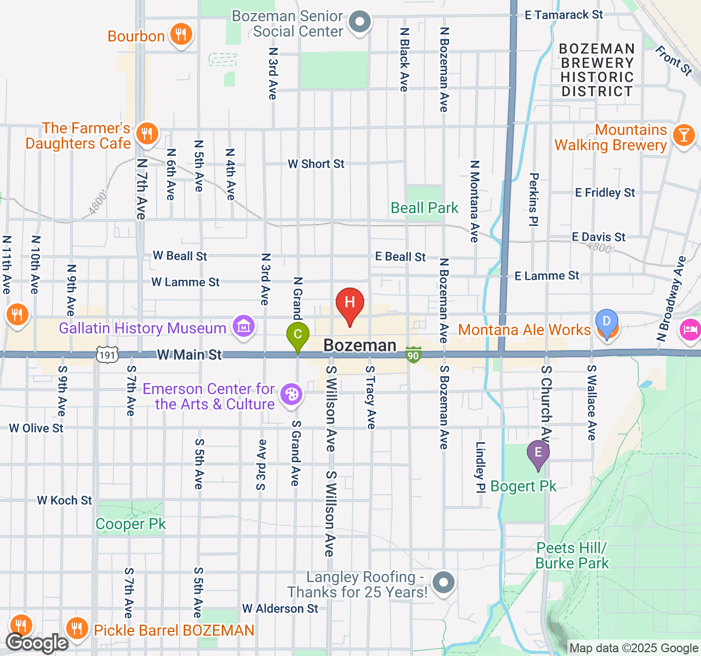
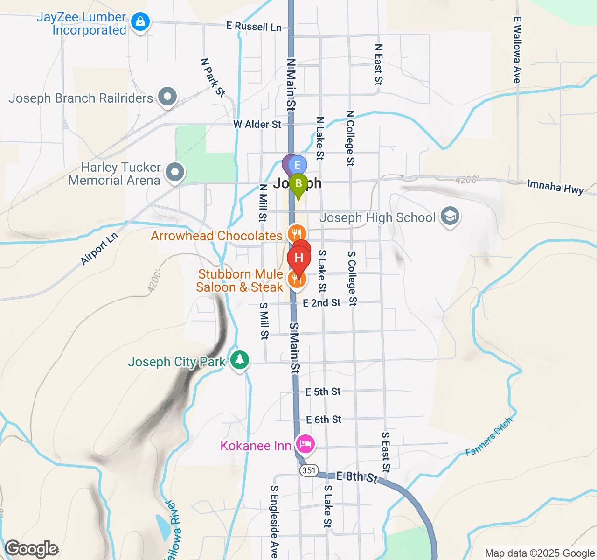
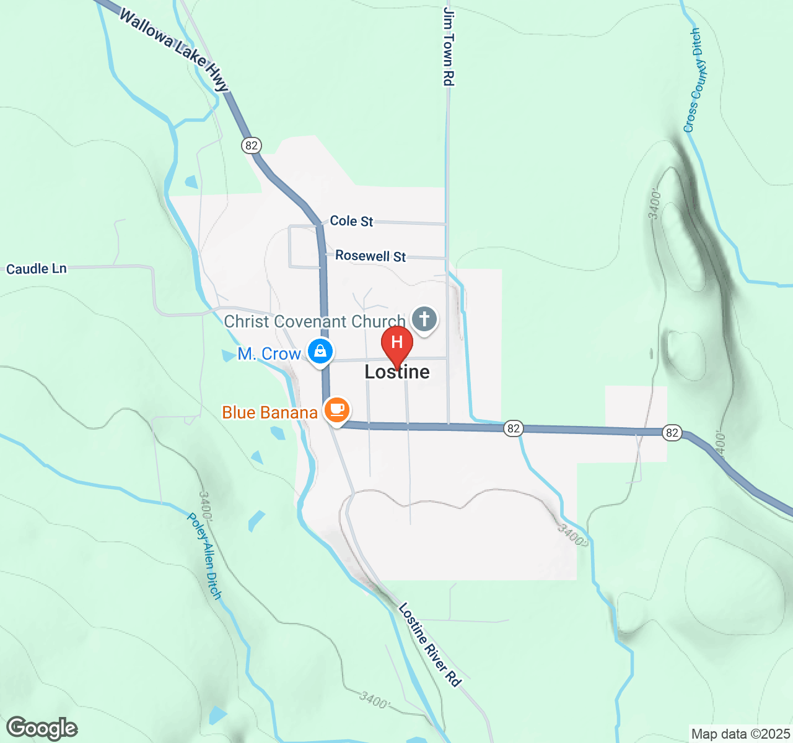
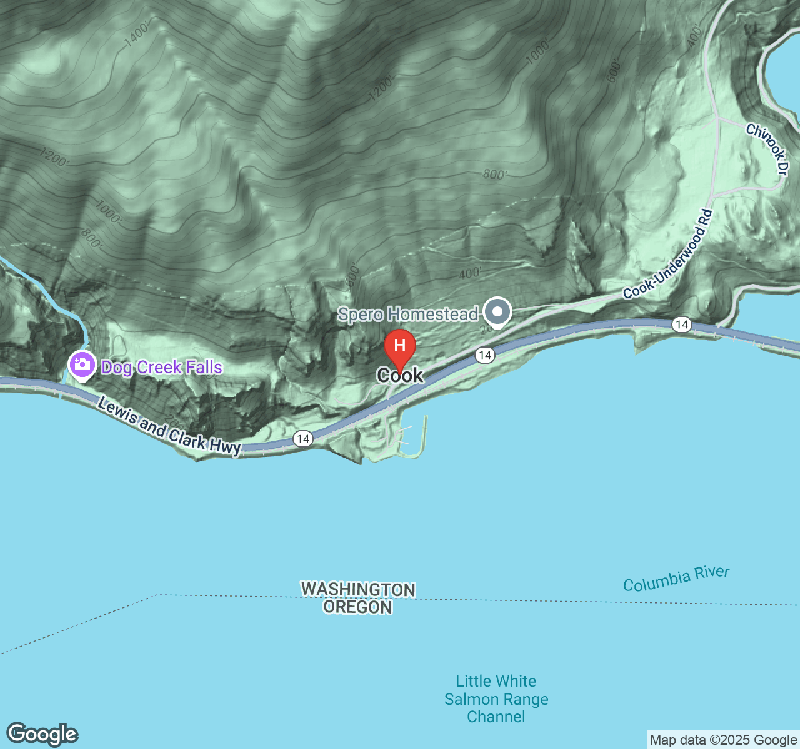

Smadar’s Booking Booklet
Pacific Northwest Adventure 2025
Trip Overview & Emergency Contacts
Travelers: Aviv & Smadar
Duration: August 3-12, 2025 (departing Seattle Aug 12)
Total Distance: 1,049 miles
Total Driving Time: 20.4 hours
Emergency Contact: Gil & Camila (traveling companions)
Trip Insurance: Consider comprehensive travel insurance
UPDATED BOOKING PRIORITIES: ✅ COMPLETED: Kimpton Bozeman (Aug 3-5) - Two King Rooms
✅ COMPLETED: Under Canvas Columbia River Gorge (Aug 11) - Stargazers Tent
REMAINING URGENT PRIORITIES: 1. FLIGHTS - August 3rd to Bozeman (~$109/person vs $349 Aug 4th) 2. LA CASA ITALIANA McCall - Book the condo for Aug 6-8 3. The Jennings Hotel Joseph - Little Brick Building + Room #11 for Aug 8-9
LEG 1: Bozeman, Montana
August 3-4, 2025
Route Information
Arrival: Fly into Bozeman-Yellowstone International (BZN)
Departure: Drive to Missoula (202 mi, 2h 58m)
Dates: August 3-4 (2 nights)
BOOKING DETAILS
FLIGHT BOOKING
To Bozeman (August 3rd): - RECOMMENDED: Morning flight JFK→BZN
- Estimated Cost: $109/person (SAVE $240 vs Aug 4th)
- Flight Time: 5h 5m direct Delta
- Book Through: Delta.com or travel agent
- URGENT: Book immediately for savings
ACCOMMODATION BOOKING ✅ BOOKED!
Hotel: Kimpton Armory Hotel Bozeman
Address: 24 W Mendenhall St, Bozeman, MT 59715
Phone: (406) 551-7700
Website: kimptonarmoryhotel.com
CONFIRMED: Two King Rooms for August 3-5, 2025
Status: ✅ SUCCESSFULLY BOOKED BY SMADAR
Special Notes: Historic boutique property, downtown location
WALKING MAP & LOCAL AREA

Within Walking Distance: - A - Main Street Historic District (shopping & galleries) - B - Wild Crumb Bakery (artisan breads)
- C - Blackbird Kitchen (Argentine-style asado) - D - Montana Ale Works (local brewery) - E - Bogert Park (riverside walking)
DINING RESERVATIONS NEEDED
- Blackbird Kitchen - Wood-fired Argentine lamb (dinner reservation recommended)
- Montana Ale Works - Local brewery in historic railroad building
- Wild Crumb Bakery - European-style breakfast breads
ACTIVITIES TO BOOK
- Museum of the Rockies - Dinosaur exhibits (no reservation needed)
- Montana State University Campus - Self-guided tour available
- Downtown Bozeman Walking Tour - Check with hotel concierge
LEG 2: Missoula, Montana
August 5, 2025
Route Information
From: Bozeman, MT
To: Missoula, MT
Distance: 202 miles
Drive Time: 2h 58m
Next Day: Drive to Jerry Johnson Hot Springs (66 mi, 1h 20m)
BOOKING DETAILS
ACCOMMODATION BOOKING
Hotel: AC Hotel Missoula Downtown
Address: 200 S Pattee St, Missoula, MT 59802
Phone: (406) 541-8000
Website: marriott.com/en-us/hotels/msoac-ac-hotel-missoula-downtown
Rate: $455/night per room (need 2 rooms)
Total Cost: $910 for both rooms
Room Request: “High floor, west-facing corner room with panoramic city views, walk-in glass shower”
Special Notes: Modern hotel, downtown location, limited availability
WALKING MAP & LOCAL AREA
Within Walking Distance: - A - Clark Fork Riverfront Trail (scenic walking) - B - Le Petit Outre (French restaurant) - C - Plonk Wine Bar (wine tasting) - D - University of Montana (historic campus) - E - Missoula Art Museum (local culture)
DINING RESERVATIONS NEEDED
- Le Petit Outre - French bistro (dinner reservation recommended)
- Plonk Wine Bar - Montana wine selection
- Ask hotel concierge for local brewery recommendations
ACTIVITIES
- Clark Fork Riverfront Trail - Riverside walking path
- University of Montana - Historic campus exploration
- Rocky Mountain Elk Foundation - Wildlife education center
LEG 3: Jerry Johnson Hot Springs & McCall, Idaho
August 6-8, 2025
Route Information
August 6: Missoula to Jerry Johnson Hot Springs (66 mi, 1h 20m)
Stop: Jerry Johnson Hot Springs (day visit)
Continue: Jerry Johnson to McCall (190 mi, 3h 49m)
August 6-8: McCall (2 nights)
BOOKING DETAILS
HOT SPRINGS (No Reservations - Day Use Only)
Jerry Johnson Hot Springs
Location: Mile Marker 152, Highway 12, Idaho
Access: 1-mile hike from parking
Hours: 6 AM - 8 PM daily
Cost: FREE
Facilities: None - pack everything in/out
Special Notes: Natural wilderness hot springs, clothing optional
WALKING MAP & LOCAL AREA
Within Walking Distance: - A - Payette Lake Beach (lakefront access) - B - Downtown McCall (shopping district) - C - Smoky Mountain Pizzeria (local dining) - D - Legacy Park (recreation area) - E - McCall Activity Barn (equipment rentals)
DINING OPTIONS (Downtown Location Advantage)
Walking Distance from Condo: - Downtown McCall restaurants - Multiple options within blocks - Payette Lake dining - Lakefront restaurants nearby - Cook at home - Full kitchen in condo for grocery shopping & meals - Local markets - Stock up on provisions for mountain cooking
HOT SPRINGS DAY TRIPS (Same access as Shore Lodge)
- Trail Creek Hot Springs - Rock pools, 60-foot walk from parking
- Burgdorf Hot Springs - Historic resort ($20/adult, reservations required)
- Gold Fork Hot Springs - Six tiered pools ($10/adult)
- Research other local hot springs - Ask locals for hidden gems
ACTIVITIES & ADVANTAGES
- Downtown walkability - Shops, galleries, cafes at your doorstep
- Payette Lake access - Short walk to lake activities
- Mountain recreation - Hiking, scenic drives from central location
- More space - 3 bedrooms vs single hotel room
- Cost savings - $360/night vs $500-700 at Shore Lodge
LEG 4: Joseph, Oregon
August 8-9, 2025
Route Information
From: McCall, ID
To: Joseph, OR
Distance: 166 miles
Drive Time: 4h 19m (mountain roads)
Stop En Route: Lostine, OR (M. Crow & Co. Store)
Dates: August 8-9 (2 nights - Friday & Saturday)
Next Day: Drive to Walla Walla (109 mi, 2h 11m)
BOOKING DETAILS
ACCOMMODATION BOOKING (PRIORITY UPGRADE!)
Hotel: The Jennings Hotel
Address: 100 Main St, Joseph, OR 97846
Phone: Book directly through hotel website
ROOM 1: The Little Brick Building Rate: $754 for 2 nights (August 8-10, 2025)
Room Details: Premium standalone building, most luxurious accommodation
2-Night Minimum: Required (perfectly matches our new plan)
Special Notes: The Little Brick Building is the crown jewel of the property
ROOM 2: Room #11 - Private Bath, Self Check-in Rate: $580 for 2 nights (August 8-10, 2025) - CONFIRMED AVAILABLE Room Details: 1 bed, 1 bathroom, accommodates 2 guests Special Features: Private bath, self check-in convenience, historic charm Status: Available for your exact dates (Aug 8-10, 2025)
TOTAL FOR BOTH ROOMS: $1,334 for 2 nights ($754 + $580)
COMPLETE JENNINGS HOTEL ROOM OPTIONS
PREMIUM OPTIONS: - The Little Brick Building (standalone) - $377/night - Most luxurious, private building - Room 6 - Often booked (check availability) - Historic corner room - Room 11 - PREFERRED ALTERNATIVE - Best main hotel room, historic features
STANDARD ROOMS: - Rooms 1-5 - Main building rooms, period furnishings - Rooms 7-10 - Historic hotel rooms, original character - Rooms 12+ - Additional historic accommodations
BOOKING STRATEGY: 1. BOOK BOTH ROOMS: The Little Brick Building ($754) + Room #11 ($580) 2. Total Cost: $1,334 for 2 nights for both rooms 3. Both confirmed available for August 8-10, 2025
ROOM REQUEST LANGUAGE: “We would like to book TWO rooms for August 8-10, 2025: The Little Brick Building ($754) and Room #11 ($580). Total booking $1,334 for both rooms, 2 nights. Both rooms are showing as available on your booking system.”
BOOKING DETAILS: - The Little Brick Building: Premium standalone accommodation - Room #11: Private bath, self check-in, main hotel building - Check-in: August 8, 2025 - Check-out: August 10, 2025 - Total Guests: 4 people across 2 rooms
WALKING MAPS & LOCAL AREAS
Joseph Walking Area

Within Walking Distance: - A - Valley Bronze of Oregon (working foundry) - B - Embers Brewhouse (local brewery) - C - Main Street Historic District - D - Lear’s Main Street Grill (local dining) - E - Town Park (community space)
Lostine Day Trip (8 miles from Joseph)

Must Visit: - A - M. Crow & Co. General Store (internationally renowned design) - B - Lostine Tavern (authentic Western atmosphere) - C - Historic Methodist Church - D - Lostine River Access
RESERVATIONS NEEDED
- Valley Bronze of Oregon - Call ahead for foundry tours
- Embers Brewhouse - Dinner reservations recommended
- Wallowa Lake Tramway - Check seasonal operation
ACTIVITIES TO BOOK
- Wallowa Lake - 6 miles from Joseph, alpine lake setting
- Wallowa Lake Tramway - Optional mountain summit (seasonal)
- Eagle Cap Wilderness - Hiking access from Lostine
LEG 5: Walla Walla, Washington
August 10, 2025
Route Information
From: Joseph, OR
To: Walla Walla, WA
Distance: 109 miles
Drive Time: 2h 11m
Next Day: Drive to Columbia River Gorge (205 mi, 3h 37m)
BOOKING DETAILS
ACCOMMODATION BOOKING
Hotel: Eritage Resort
Address: 1000 N 2nd Ave, Walla Walla, WA 99362
Phone: Search needed - try (509) 394-4700
Website: Search “Eritage Resort Walla Walla”
Rate: $400-600/night (wine country resort)
Room Request: “Lake View Balcony Suite with private balcony overlooking lake and wine country”
Special Notes: Suites 301-305 have private wine cellars
WALKING MAP & LOCAL AREA
Within Walking Distance: - A - Downtown Historic District (wine country charm) - B - Farmers Market (Saturday market) - C - Colville Street Patisserie (French pastries) - D - Pioneer Park (historic recreation) - E - Wine Tasting Rooms (multiple downtown locations)
WINE RESERVATIONS NEEDED
Book Through Resort Concierge: - Vineyard tours - Multiple wineries available - Wine tastings - Resort provides complimentary 4 PM daily tastings - Champagne brunch - Sunday late checkout special
DINING RESERVATIONS
- Resort dining - Vineyard views, wine pairings
- Downtown wine tasting rooms - Walking distance from resort
SPECIAL RESORT SERVICES
- Late checkout Sunday - For champagne brunch
- Sommelier service - Private wine consultations
- Vineyard transportation - Arrange through concierge
LEG 6: Columbia River Gorge
August 11, 2025
Route Information
From: Walla Walla, WA
To: Columbia River Gorge area
Distance: 205 miles
Drive Time: 3h 37m
Next Day: Drive to Seattle (110 mi, 2h 10m)
BOOKING DETAILS
ACCOMMODATION BOOKING ✅ BOOKED!
Glamping: Under Canvas Columbia River
Address: 1681 Little White Salmon Rd, Cook, WA 98605
Website: undercanvas.com
CONFIRMED: King bed with bathroom, Stargazers tent for August 11, 2025
Status: ✅ SUCCESSFULLY BOOKED BY SMADAR
Special Features: King bed, private bathroom, stargazing experience
Special Notes: Perfect choice for Columbia River Gorge glamping experience
WALKING MAP & LOCAL AREA

Within Walking Distance of Cascade Locks: - A - Bridge of the Gods (iconic Columbia River bridge) - B - Thunder Island Brewing (local brewery, river views) - C - Historic Locks and Dam (engineering marvel) - D - Marine Park (riverside trails) - E - Columbia River Trail (scenic walking/biking)
SPECIAL EXPERIENCES TO BOOK
Through Under Canvas Concierge: - Stargazer Experience - Private astronomer on clear nights - Waterfall tours - Multiple Columbia River Gorge waterfalls - Scenic gorge drives - Historic Columbia River Highway
DINING
- Thunder Island Brewing - Local brewery with river views
- Camp dining - Under Canvas provides campfire cooking
- Morning coffee - Served at fire pit starting 6 AM
ACTIVITIES
- Bridge of the Gods - Walk across Columbia River
- Columbia River Trail - Scenic walking path
- Waterfall viewing - Multiple waterfalls nearby
LEG 7: Seattle, Washington
August 12, 2025 (Departure Day)
Route Information
From: Columbia River Gorge
To: Seattle, WA
Distance: 110 miles
Drive Time: 2h 10m
Departure: August 12th afternoon/evening
BOOKING DETAILS
FLIGHT BOOKING (PRIORITY)
From Seattle (August 12th): - RECOMMENDED: Afternoon/evening flight SEA→JFK
- Estimated Cost: $249/person
- Flight Time: 5h 28m direct Delta
- Arrival: Same day New York (late evening)
- Book Through: Delta.com or travel agent
OPTIONAL OVERNIGHT (if late flight)
Hotel: The Fairmont Olympic Seattle
Address: 411 University St, Seattle, WA 98101
Phone: (206) 621-1700
Website: fairmont.com/seattle
Rate: $400-600/night (historic luxury)
Room Request: “High floor Olympic Suite with city views, luxury amenities”
Special Notes: Olympic Suites floors 8-10 newly renovated
WALKING MAP & LOCAL AREA
Within Walking Distance: - A - Pike Place Market (iconic market) - B - Seattle Art Museum (Pacific Northwest art) - C - Pioneer Square (historic district) - D - Waterfront Park (Elliott Bay access) - E - Grand Central Bakery (artisan breads)
PRE-DEPARTURE ACTIVITIES
- Pike Place Market - Morning visit before flight
- Seattle waterfront - Final Pacific Northwest views
- Coffee culture - Starbucks Reserve or local roasters
AIRPORT LOGISTICS
- Car Return - Allow 2+ hours before flight
- Seattle-Tacoma International (SEA) - Large airport, arrive early
- TSA PreCheck - Recommended for August travel
Quick Reference: All Booking Contacts
IMMEDIATE PRIORITIES (Book First)
FLIGHTS
August 3rd JFK→BZN: ~$109/person (vs $349 on Aug 4th)
August 12th SEA→JFK: ~$249/person
Book Through: Delta.com, Expedia, or travel agent
SHORE LODGE (URGENT - Books fastest)
Phone: (800) 657-6464
Website: shorelodge.com
Dates: August 7-8, 2025
Rate: $500-700/night
ALL ACCOMMODATION CONTACTS
| Location | Hotel | Phone | Website | Rate/Night |
|---|---|---|---|---|
| Bozeman | Kimpton Armory ✅ BOOKED | (406) 551-7700 | kimptonarmoryhotel.com | $200-300 |
| Missoula | AC Hotel Downtown | (406) 541-8000 | marriott.com | $455 |
| McCall | LA CASA ITALIANA Condo | Vacation rental platform | Search “La Casa Italiana McCall” | $360/night |
| Joseph | Little Brick Building + Room #11 | Book direct | jenningshotel.com | $667/night (both) |
| Walla Walla | Eritage Resort | Contact needed | Search needed | $400-600 |
| Columbia Gorge | Under Canvas ✅ BOOKED | undercanvas.com | undercanvas.com | $300-500 |
| Seattle | Fairmont Olympic | (206) 621-1700 | fairmont.com/seattle | $400-600 |
ESTIMATED TOTAL COSTS
Flights: $716 per couple ($109 + $249 × 2)
Hotels: $2,890 for 8 nights total (updated with LA CASA ITALIANA: $1,026 + Jennings: $1,334)
Meals/Activities: $1,000-1,500
TOTAL ESTIMATE: $4,606-5,106 per couple (updated with LA CASA ITALIANA condo)
BOOKING STRATEGY
✅ COMPLETED BOOKINGS: - Kimpton Armory Hotel Bozeman (Aug 3-5) - Two King Rooms - Under Canvas Columbia River Gorge (Aug 11) - Stargazers Tent with King Bed
REMAINING TO BOOK: 1. Book flights IMMEDIATELY (save $280+ per couple) - HIGHEST PRIORITY 2. LA CASA ITALIANA McCall (Aug 6-8) - Book the downtown condo 3. The Jennings Hotel Joseph (Aug 8-9) - Little Brick Building + Room #11 4. Remaining accommodations - Missoula, Walla Walla, Seattle 5. Consider travel insurance for peace of mind
PAYMENT NOTES
- Most hotels require credit card to hold reservation
- Some properties may require deposits
- Check cancellation policies for flexibility
- Consider using travel rewards credit cards
Created for Smadar’s Pacific Northwest Adventure
Safe travels and amazing experiences ahead!